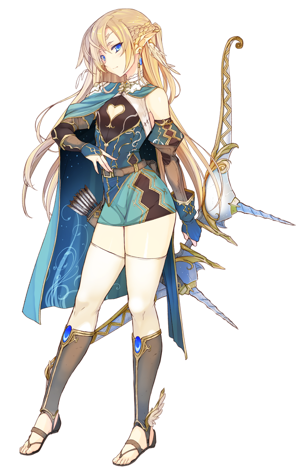

A Floresta encantada...

A estrada escolhida a levou até a floresta encantada, conhecida por abrigar criaturas misteriosas. Escolha uma opção:
1 - Voltar e escolher a estrada iluminada
2 - Continuar pela Floresta